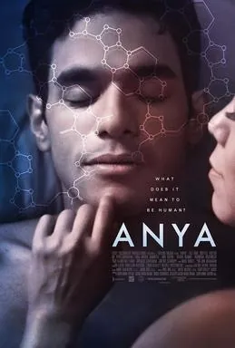

The genetics
Genetics and anthropology are the subject of the film, which asks what it would mean if a hidden human population turned out to be reproductively isolated from everyone else. The geneticist Seymour is a sympathetic, curious scientist whose findings could change how humans are classified, but whose investigation threatens the privacy of a community that has kept itself apart through endogamy and the shunning of those who leave. The film thus raises real ethical questions about genetic research on isolated populations and about what a genetic test can reveal beyond the individuals who take it. Co-director Carylanna Taylor has a background in anthropology, a Harvard researcher served as scientific consultant, and the laboratory scenes were filmed in a real genetics lab at Carnegie Mellon University. Reviewers differed on the result: one praised its academic care, another found the story implausible. In reality, all living humans belong to a single interfertile species, and genetic differences between populations are small.
The story
Libby, a reporter, and her husband Marco want a child, but after repeated miscarriages they cannot conceive. Marco comes from the Narval, a closed community whose ancestors came from an island in the Caribbean and who now live in a corner of the South Bronx; he was expelled from it on the day he met Libby, and his people believe that anyone who leaves is cursed with infertility. To investigate the "curse", Libby takes him to her former boyfriend Seymour, an evolutionary geneticist. Analysing their DNA, Seymour finds that Marco's people differ so much from other humans that they could be considered a distinct species: each partner could have children with someone of their own kind, but a child together is almost impossible. Pursuing the question means exposing a fiercely private community to outside scrutiny. The film opens with a monologue by the unborn child of the title.